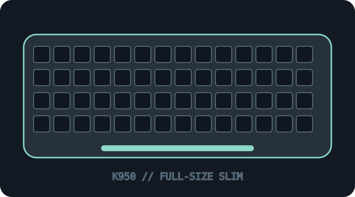

[ KEYBOARDS AND INTEGRATED POINTING DEVICES // IDENTIFIED SKU ]
Logitech Signature Slim K950 (920-012499)
Full-size multi-device wireless office keyboard with quiet laptop-style keys and Easy-Switch.

MODEL IDENTIFICATION: 920-012499 — K950 US graphite keyboard SKU; distinguish the standalone keyboard from the MK950 keyboard/mouse bundle. This archive entry identifies a real manufacturer product/variant; physical labels and dated manuals supersede generalized family descriptions.
Model specifications
| Catalog subcategory | Keyboards and integrated pointing devices |
|---|---|
| Exact model / SKU | 920-012499 — K950 US graphite keyboard SKU; distinguish the standalone keyboard from the MK950 keyboard/mouse bundle. |
| Layout and key arrangement | Full-size US layout with numeric keypad, low-profile key field and three Easy-Switch host keys. Locale-specific legends and layouts are sold separately. |
| Switch type / mechanism | Low-profile laptop-style scissor keys with Logitech Silent Touch design; not a mechanical-switch keyboard. The manufacturer does not describe it as a user-serviceable switch assembly. |
| Interface and protocol | Bluetooth Low Energy 5.1 or Logi Bolt USB-A receiver. No wired typing mode; batteries power operation. Supports up to three paired devices. |
| Key rollover / anti-ghosting | No key-rollover/anti-ghosting count is published by Logitech. Use ordinary text-entry expectations only; simultaneous key registration has not been specified as NKRO. |
| External dimensions | 433.85 × 134.8 × 23.1 mm (width × depth × height); 685 g with batteries. Dimensions are for the keyboard, not an MK950 mouse/keyboard bundle. |
| OS and host compatibility | Logitech lists Windows 10/11+, macOS 11+, ChromeOS, Linux, iPadOS/iOS 14+ and Android 9+ with differing basic/advanced functionality. Logi Options+ customization is for supported Windows/macOS hosts. |
| Revision / regional caveat | 920-012499 is a regional keyboard SKU; bundles, regional key layouts and Bolt receiver inclusion vary. Do not attribute MK950 combo mouse dimensions or receiver contents to the standalone keyboard. |
Preservation and service notes
Record the underside part number, included receiver/batteries and OS-switch setting. Preserve receiver pairing and Options+ mappings; use the model-specific safe cleaning instructions.
Record the as-found SKU/revision, host OS and version, connection method, firmware, keymap and test method. Do not infer rollover or compatibility from the connector alone; clearly separate unpublished manufacturer specifications from tested observations.
Manufacturer sources
- Logitech Signature Slim K950 product and specificationsManufacturer product listing with exact K950 identifier and specifications.
- Logitech Signature Slim K950 supportManufacturer support listing for the K950 family.
Manufacturer pages can be revised or retired. Retain the applicable dated manual/specification with the physical equipment record.